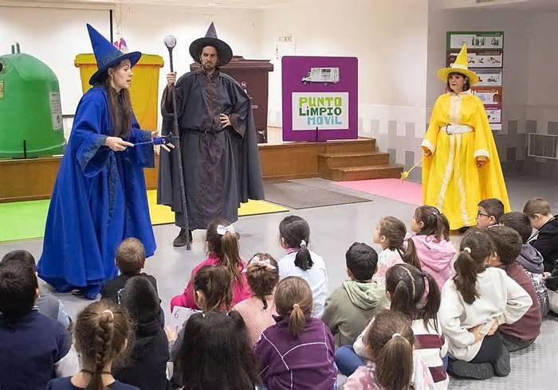

'Los tres magos del reciclaje' enseñan a los alumnos de Primaria a separar los envases ligeros

Una campaña del Gobierno de La Rioja, el Consorcio de Aguas y Residuos y Ecoembes enseña a 2.300 niños a reciclar ...
Una campaña del Gobierno de La Rioja, el Consorcio de Aguas y Residuos y Ecoembes enseña a 2.300 niños a reciclar ...
Noticia publicada por LA RIOJA. Consulta el artículo original en LA RIOJA para más información.